Layers
KML Layer Google Source
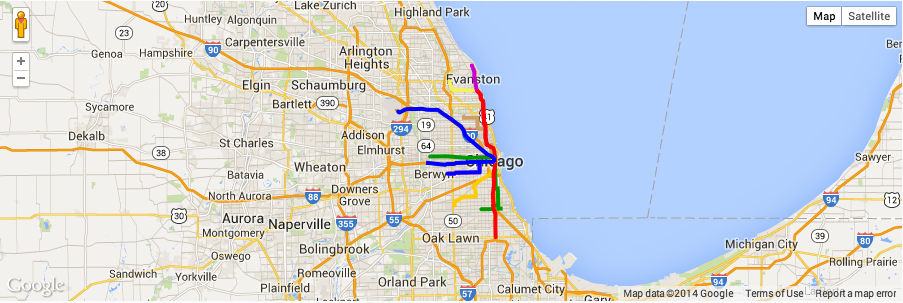
KML feature details Google Source
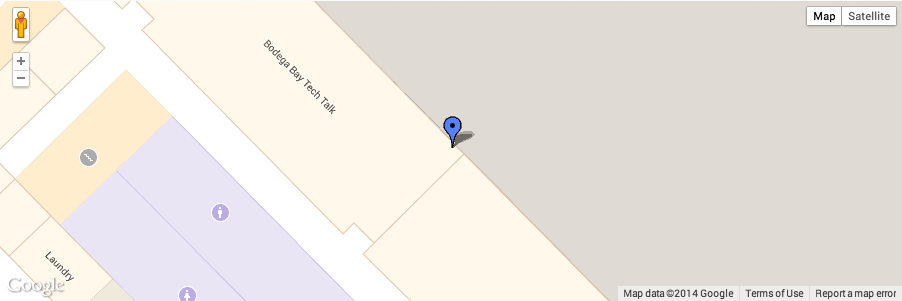
{{description}}
Data Layer (Simple) Google Source
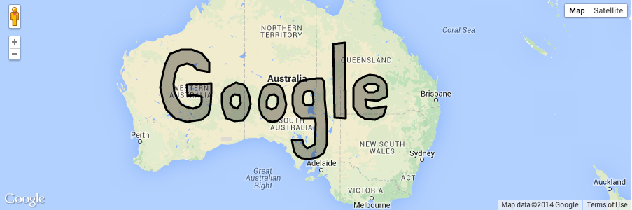
Data Layer: Styling Google Source
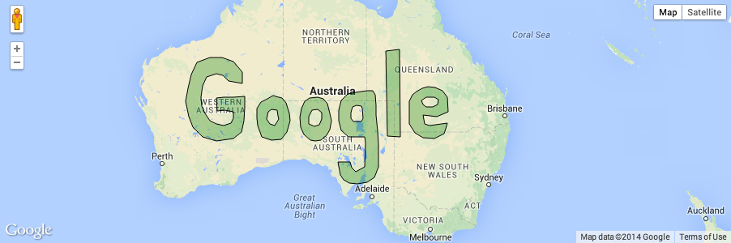
Data Layer: Event Handling Google Source
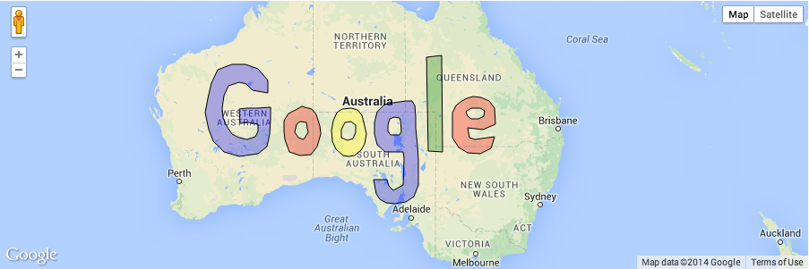
{{letter}}
Data Layer: Dynamic Styling Google Source
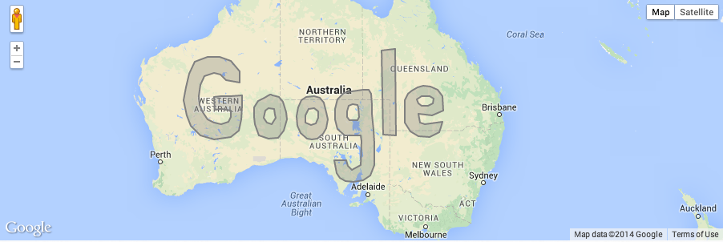
{{letter}}
Data Layer: Earthquake data Google Source
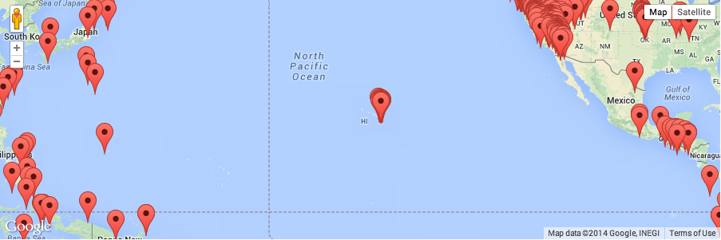
Data Layer: Earthquake data Google Source
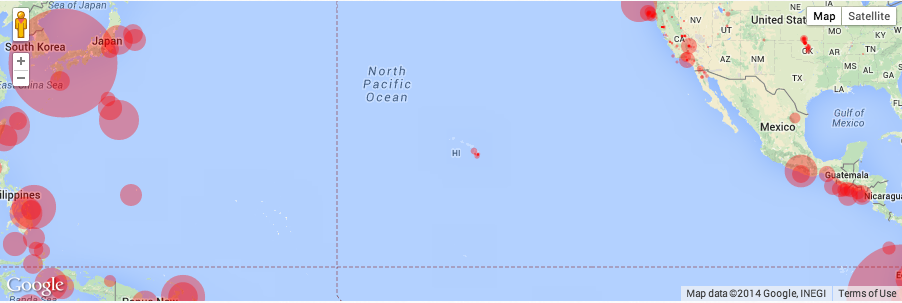
Data Layer: Earthquake data (Advanced) Google Source
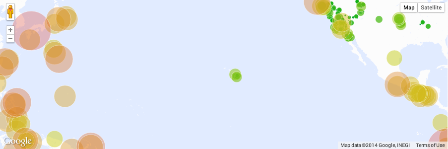
Heatmaps Google Source
Maps Engine Layer Google Source
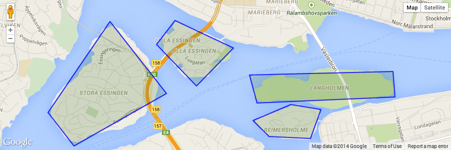
Dynamic Maps Engine Layer Google Source
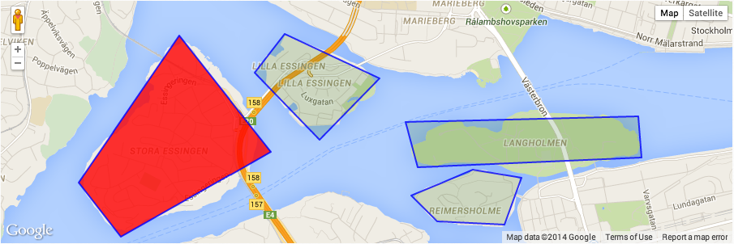
Maps Engine layers by layer ID Google Source
Maps Engine layers by layer key Google Source
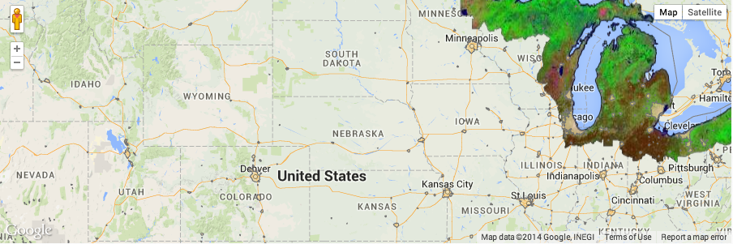
Fusion Tables layers Google Source

Fusion Tables queries Google Source
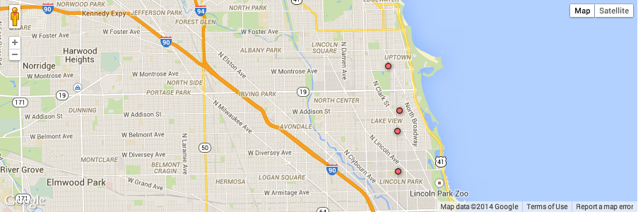
Fusion Table heatmaps Google Source
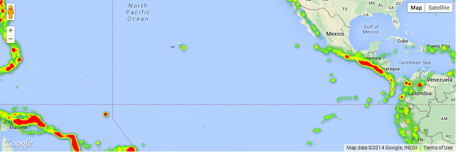
Fusion Tables styling Google Source
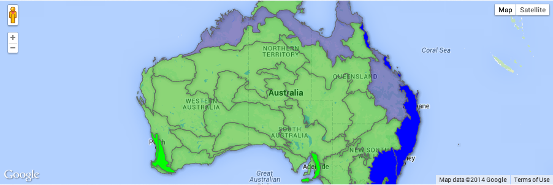
GeoRSS layers Google Source
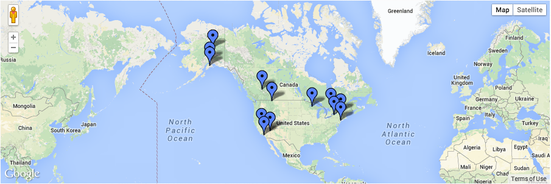
Traffic Layer Google Source
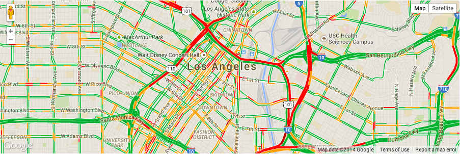
Transit Layer Google Source
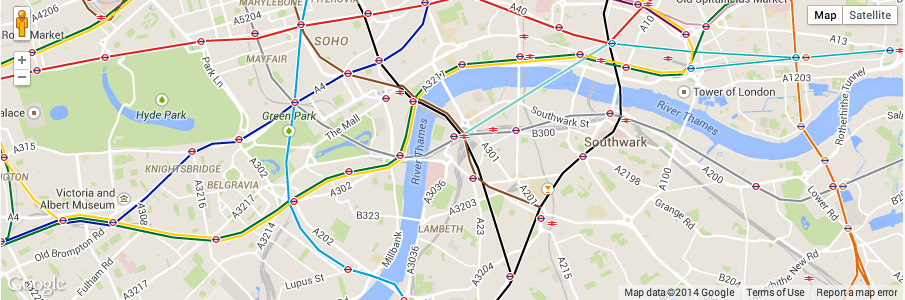
Weather Layer Google Source
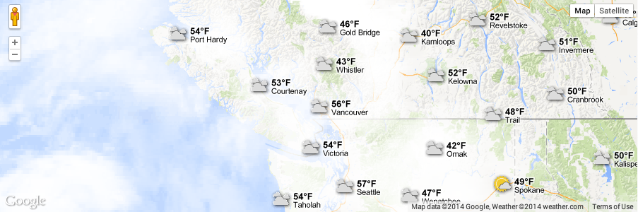
Bicycle Layer Google Source
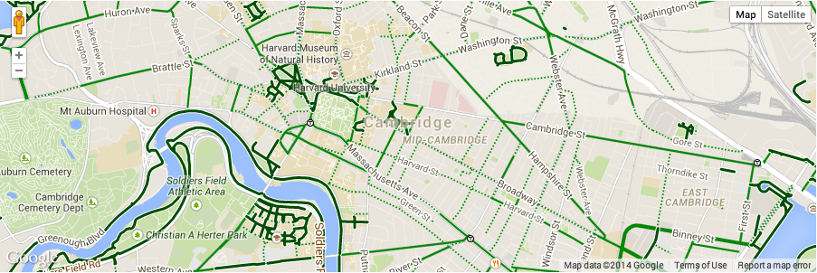